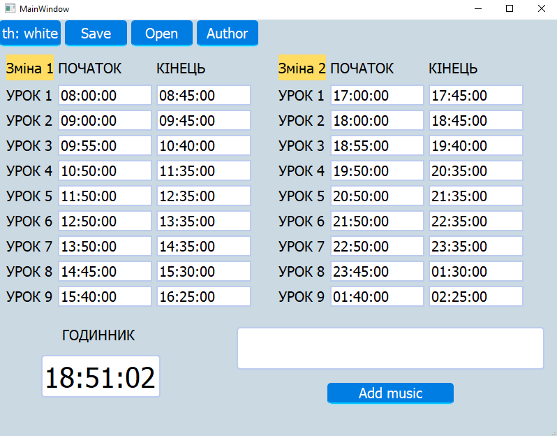
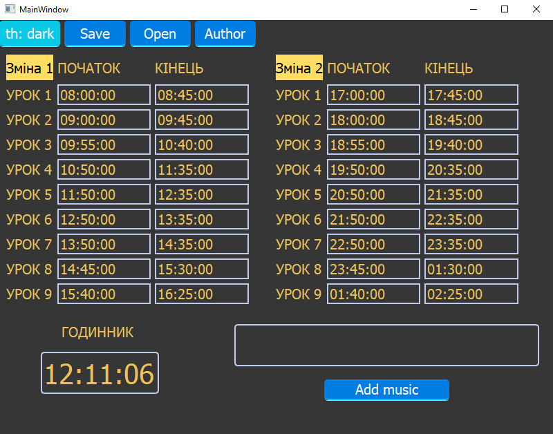
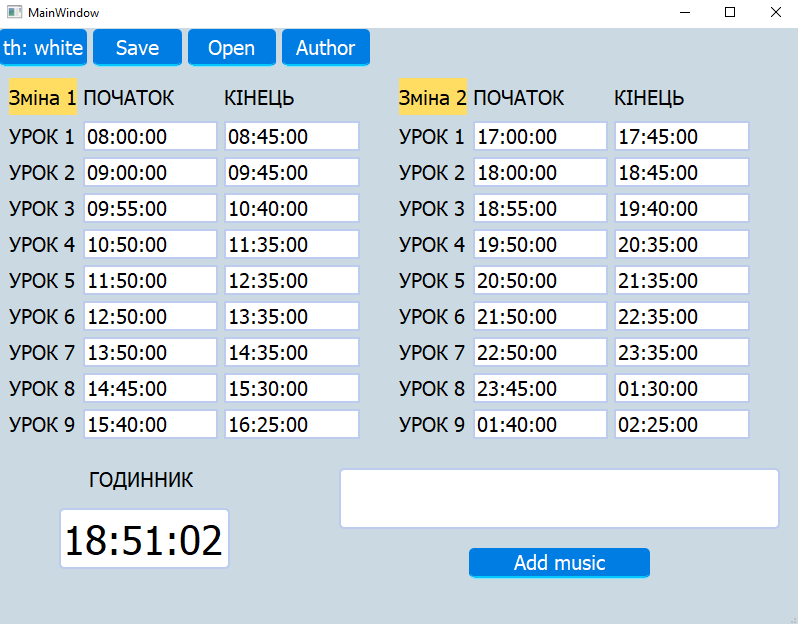
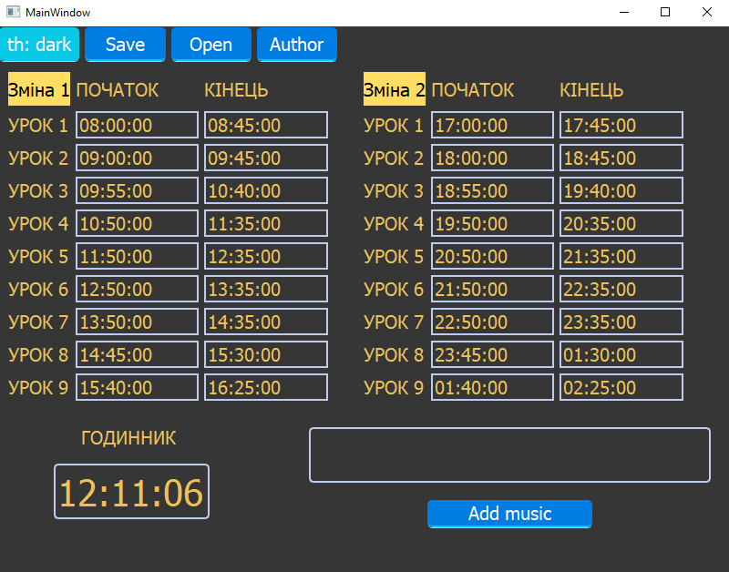

Функції програми
- Заповнення областей з часом,
які визначають час роботи дзвоника
з точністю до секунди.
Заповнення відбувається у форматі
«Год:хв:сек» - Додавання музики (дзвінка) для
роботи дзвінка у трьох найвідоміших
аудіо форматах («.ogg», «.mp3», «.wav»)

- Зберігання налаштувань часу для
зручності відкриття програми кожен день - Друга функція є зміною теми
інтерфейсу на темну.
Це зроблено для того,
щоб при роботі з додатком
у темноті не псувати зір.

Запуск програми
1. Для запуску потрібно натиснути два рази ЛКМ по файлу «Шкільний дзвінок.exe».
2. На екрані з’явиться головне вікно з інтерфейсом програми
 
2. На екрані з’явиться головне вікно з інтерфейсом програми
 
Функція додавання часу
Для додавання часу потрібно у поля ввести формат часу
(години:хвилини:секунди).
Для зручності є поле «Годинник», яке показує поточний час.
Для зручності є поле «Годинник», яке показує поточний час.
Додавання аудіо дзвінка
1. Натиснути на кнопку «Add music».
2. У відкритому вікні обрати потрібний аудіо файл (формат файлу може бути («.ogg», «.mp3», «.wav»). Для спрощення запуску у папці «Test Data» було додано приклад аудіо дзвінка.
3. Після додавання файлу програма готова до роботи.
2. У відкритому вікні обрати потрібний аудіо файл (формат файлу може бути («.ogg», «.mp3», «.wav»). Для спрощення запуску у папці «Test Data» було додано приклад аудіо дзвінка.
3. Після додавання файлу програма готова до роботи.
Зберігання налаштувань часу
1. За замочуванням у програмі вже встановлено час, але є можливість
збереження свого. Для того, щоб зберегти свої налаштування потрібно
натиснути на кнопку «Save».
2. У відкритому вікні вибрати шлях до папки, у яку потрібно зберегти файл та додати ім’я цьому файлу.
3. Для відкриття налаштувань потрібно натиснути кнопку «Open».
4. Після цього у спеціальному вікні вибрати цей файл та натиснути «Відкрити».
5. У головному вікні повинні з’явитися всі збережені налаштування часу.
2. У відкритому вікні вибрати шлях до папки, у яку потрібно зберегти файл та додати ім’я цьому файлу.
3. Для відкриття налаштувань потрібно натиснути кнопку «Open».
4. Після цього у спеціальному вікні вибрати цей файл та натиснути «Відкрити».
5. У головному вікні повинні з’явитися всі збережені налаштування часу.
Зміна кольору фону
Для зміни кольору фону потрібно натиснути на кнопку «th: white/dark».
У програмі є дві теми світла та темна.
Про автора
Щоб дізнатися більше про автора або знайти контакти для запиту у
технічну підтримку потрібно натиснути на кнопку «Author».